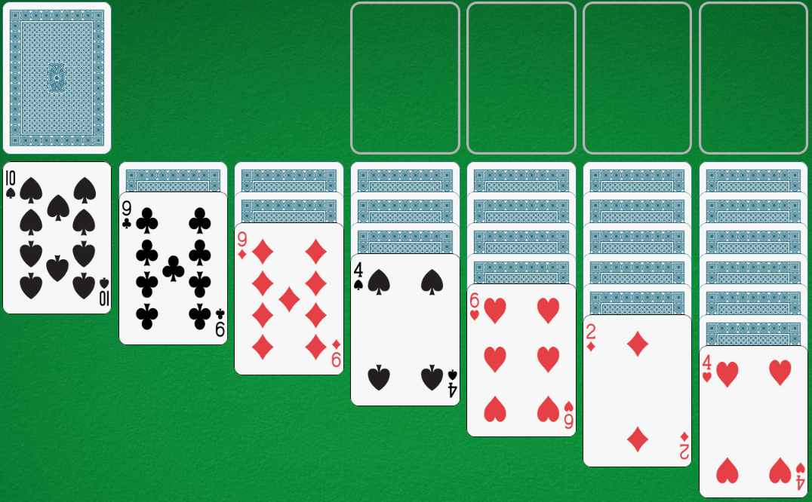

Objectiu del solitari clàssic
El solitari intenta ordenar les cartes de forma ascendent basant-nos en una estructura de set columnes.
Com es col·loquen les cartes?
-Cal crear set columnes i col·locar, de dreta a esquerra:
1. Sis cartes cara avall i una cara a dalt.
2. Cinc cartes cara avall i una cara a dalt.
3. Quatre cartes cara avall i una cara a dalt.
4. Tres cartes cara avall i una cara a dalt.
5. Dues cartes cara avall i una cara a dalt.
6. Una carta cara avall i una cara a dalt.
7. Una carta cara amunt.

Quan tinguem el tauler organitzat, podrem començar a fer moviments. Aquestes són les normes:
-Cal col·locar una carta menor per sobre de la més gran de manera que es pugui veure el número de la que quedi a sota.
-No es poden col·locar cartes del mateix pal ni del mateix color —si no estem usant una baralla espanyola juntes—. És a dir, cal anar alternant.
-Si ja no podem fer més moviments, traurem tres cartes del mall i les col·locarem on correspongui.
-Podem moure les diverses cartes alhora i col·locar-les sobre una altra columna.
-Quan es tregui una carta de panxa enlaire i quedi lliure la que està de cap per avall, li donarem la volta a aquesta última.
-Si surt un as, ho posarem en un dels quatre requadres i anirem col·locant de manera ordenada les cartes del mateix pal que puguem.